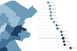

Trafford Data Lab
Supporting decision-making in Trafford by revealing patterns in data through visualisation.
Visit our dedicated page for all outputs relating to the census conducted in 2021.
COVID-19 Resources
Visit the COVID-19 page for all our outputs relating to the coronavirus pandemic.
Apps
Corporate plan dashboard

The corporate plan describes Trafford Council's strategic vision, outcomes and priorities for the borough. This dashboard interactively visualises data for a range of indicators that relate to each of the three strategic priorities.
Schools in Trafford

Find schools and colleges in Trafford by phase, type, Ofsted rating and other filters. Links to Ofsted reports, performance comparisons and the schools' websites are also provided.
Public Parks in Trafford
Discover the facilities available within the public parks in Trafford. Information regarding the various friends' groups is also available.
Climate emergency slide pack

More than half of UK councils have declared a "climate emergency". This tool is designed to support local councils by visualising open data relating to climate change. We have also created an accompanying climate emergency open data companion.
English Indices of Deprivation 2019

Interactive visualisation of the data released by the Ministry of Housing, Communities & Local Government for Lower-layer Super Output Areas (LSOA) across England by Local Authority District. Please visit our Indices of Deprivation 2019 page for further resources.
Ward Profiler
In-depth information focussing on each of Trafford's wards. The information is presented in thematic sections as interactive maps and charts allowing for easy comparisons to be made. You can also download the data and code behind the visualisations.
Explore

Discover the different geographic areas of Trafford and visualise all of our spatial datasets in one application. Use the geolocation facility (on supported devices with the user's permission) to see where you are and discover what is around you.
Crime Scanner
Interactively visualise street level crime and anti-social behaviour (ASB) incidents in your area.
Choroplether
Create choropleth maps of your own data in Vega-Lite without having to write all the code yourself. Export the output as an image or embed it in a web page.
Population Picker

Discover single or aggregated population figures for the different statistical and administrative geographies. Choose the age range of interest by single year of age and export the data in various formats.
Postcode Loader

An R Shiny app allowing users to download the latest postcode centroids from the Office for National Statistics' Open Geography Portal API.
Postcoder

This R Shiny application powered by Postcodes.io allows you to find administrative and statistical geographies for a given postcode. You can either enter the postcode manually or click on the map to find the nearest postcode to the corresponding coordinates.
Plotter

Create and edit map features in the form of lines, polygons, circles and markers and save the results. Load previously saved data and add to it, or use it in other applications such as Graphical Information Systems (GIS) software.
Road casualties

Application enabling users to explore GM reported road traffic accidents involving personal injury between 2005 and 2018.
Reports
2021 UK Armed Forces Veterans

The 2021 census in England and Wales was the first to ask people if they had previously served in the UK armed forces. This report analyses the data for Trafford released in the UK armed forces veterans: Census 2021 in England and Wales topic summary, relating to those who previously served in the UK armed forces and excluding those who are currently serving.
2021 Demography & Migration

Following the release of demography and migration data from the 2021 census, this report contains analysis of the change in Trafford's population and households from the previous census and provides comparisons with the other local authorities in Greater Manchester. Additionally for Trafford, analysis is also provided for international migration.
Claimant Count and Universal Credit in Trafford

Analysis of claimant count and Universal Credit claims in Trafford over time, including area and age-group breakdowns. This report is updated on a regular basis using data from Nomis.
English Indices of Deprivation 2019
Resources, including Local Authority and ONS ‘best-fit’ ward reports, relating to the Indices of Deprivation 2019 data released by the Ministry of Housing, Communities & Local Government.
Graphics
2021 Population by Country of Birth
Infographic containing population statistics by country of birth from the Demography and migration data, England and Wales: Census 2021.
2021 Household Composition
Infographic containing household composition statistics from the Demography and migration data, England and Wales: Census 2021.
2021 Population & Households
Infographic containing population and household statistics from the 2021 census data first release.
2011 Output Area Classification
The Output Area Classification is an open source geodemographic classification that uses the 2011 Census to group the UK's Output Areas. Explore the pen portraits and radial plots for information about the classifications.
Resident population of Trafford

Mid-year 2020 resident population estimates for Trafford visualised by electoral ward.
Trafford's locality boundaries

Map showing the boundaries of Trafford's localities and listing the electoral wards contained in each.
Index of Multiple Deprivation 2019 for Trafford

Visualising the data released by the Ministry of Housing, Communities & Local Government for Lower-layer Super Output Areas (LSOA) in Trafford. The Index of Multiple Deprivation 2015 version is also available. Please visit our Indices of Deprivation 2019 page for further resources.